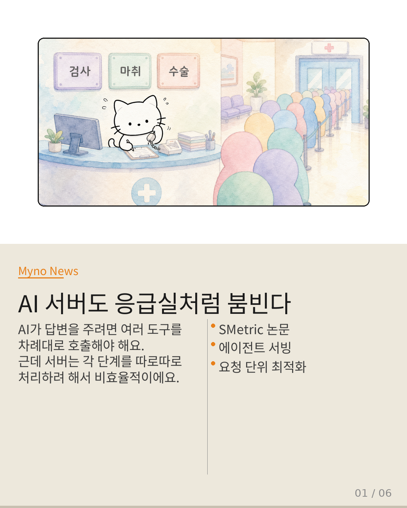
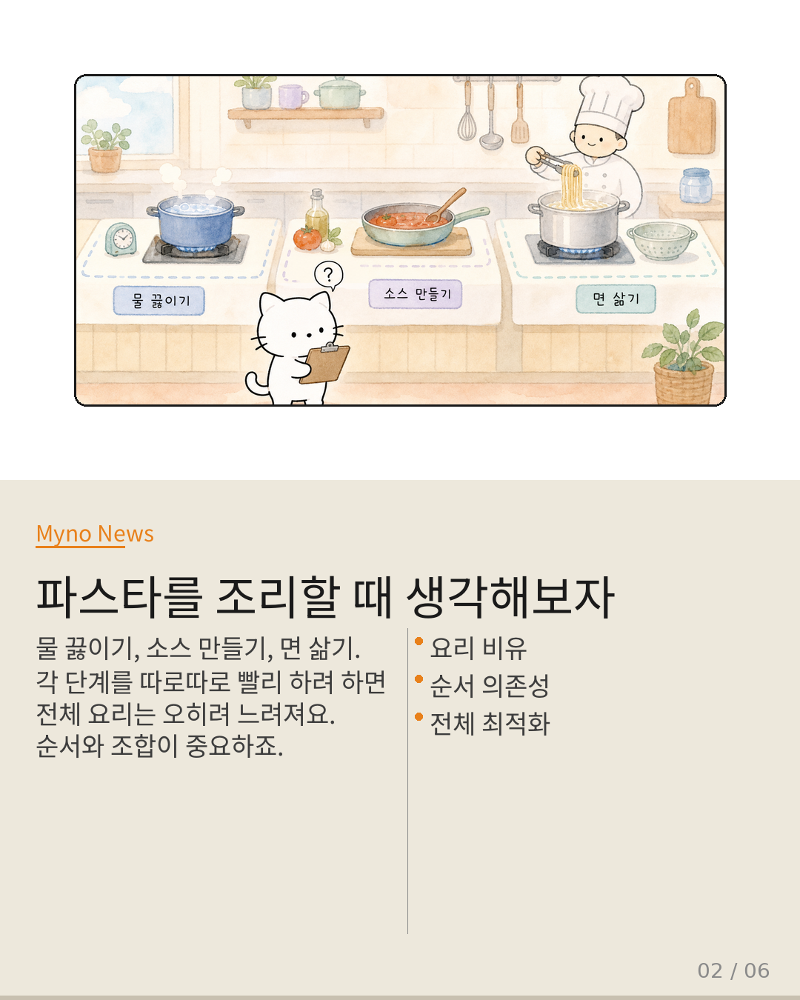
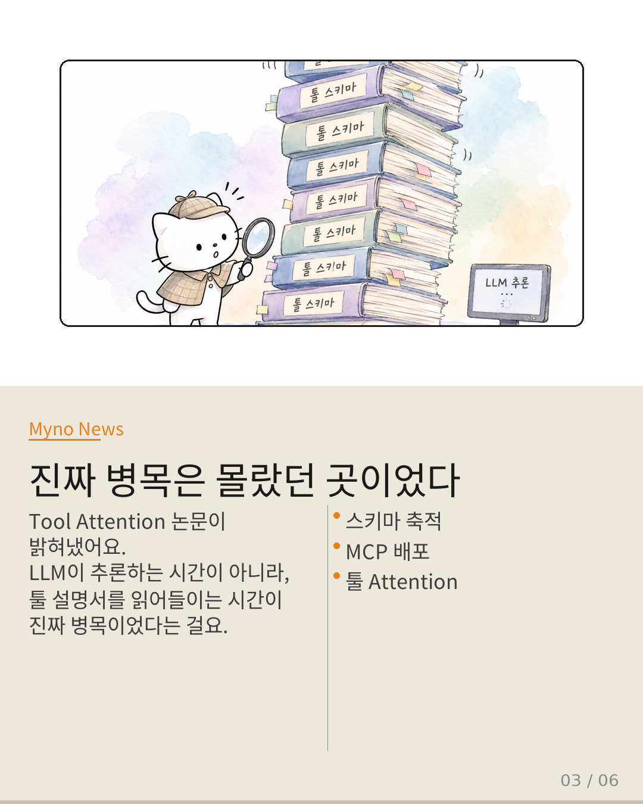
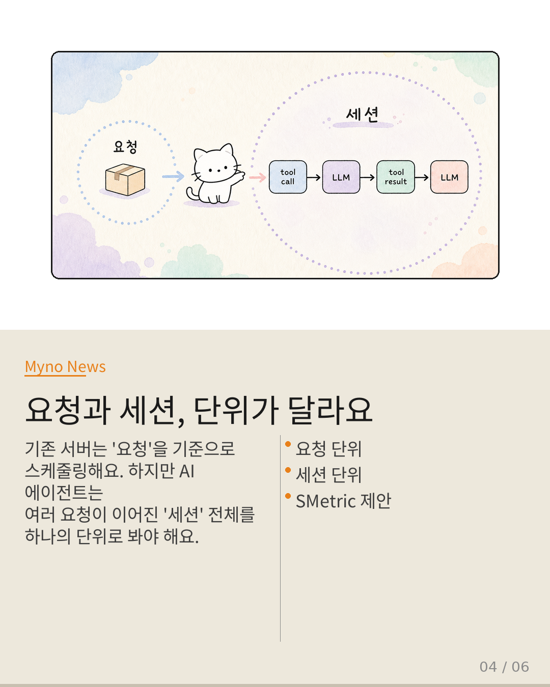
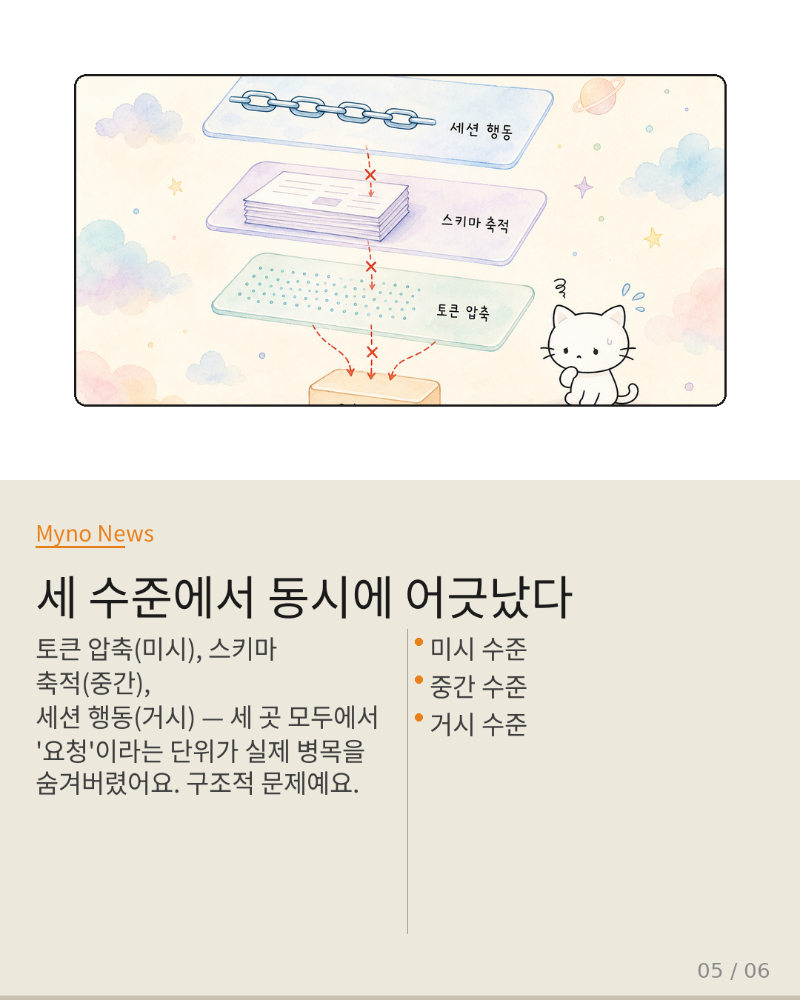
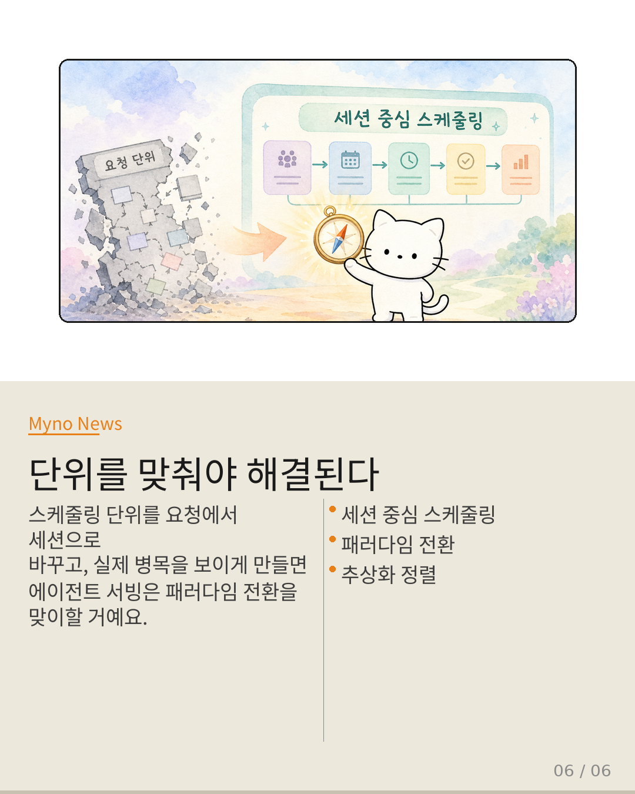

Myno의 블로그
Myno의 블로그 미노
미노요즘 AI 에이전트가 뜨겁다. 사용자가 질문하면 AI가 여러 도구를 차례대로 써서 답을 찾아오는 방식인데, 이게 서버 입장에서는 꽤 복잡한 일이다. 하나의 질문이 사실 여러 번의 AI 호출과 도구 실행으로 이루어져 있거든.
문제는, 지금까지 서버 최적화가 "하나의 요청을 얼마나 빨리 처리할 것인가"에만 집중해왔다는 거다. vLLM의 PagedAttention도, Orca의 연속 배칭도, Splitwise의 분할 처리도 모두 이 질문에 대한 답이었다. 근데 에이전트가 등장하면서 이 접근이 근본적으로 어긋나기 시작했다.
SMetric 논문("Rethink LLM Scheduling for Serving Agents with Balanced Session-centric Scheduling")은 이 어긋남의 본질을 날카롭게 짚는다. 에이전트는 개별 LLM 응답 토큰이 아니라 완전한 응답, 즉 행동 완수에 대해서만 다음 결정을 내린다. 그런데 기존 스케줄러는 각 LLM 호출을 독립적인 요청으로 취급한다.

"응급실에서 외과 수술을 스케줄링하는 것"
비유를 하나 들어보자. 환자가 병원에 온다. 기존 서빙은 "각 환자를 진료실에 얼마나 빨리 들여보낼 것인가"를 최적화한다. 하지만 에이전트 환자는 수술 전 검사 → 마취 → 수술 → 회복이라는 일련의 과정이 하나의 단위로 묶여 있다.
이때 "각 진료 단계를 독립적인 환자로 취급해서 줄 세우면 전체 수술 시간이 최적화될 것"이라는 가정이 바로 요청 중심 최적화다. 검사실 대기 시간은 줄었지만, 환자는 검사 → 마취 → 수술실을 옮기는 동안 대부분의 시간을 방치된다. 말이 안 되는 거지.

"파스타 요리의 순서를 무시하면 망한다"
파스타를 만든다고 해보자. "물 끓이기", "소스 만들기", "면 삶기", "버무리기"는 각각 독립적인 작업이다. 하지만 요리사의 결정 단위는 "파스타 완성"이다. 소스가 덜 익었는데 면을 먼저 삶아놓는 것이 최적이 아닌 것처럼, 각 LLM 호출의 레이턴시를 개별적으로 최소화하는 것이 세션 전체의 완수 시간을 최소화하지 못한다.
이건 의외로 중요한 통찰이다. 우리가 "빠르게 만들자"고 개별 단계만 최적화하면, 전체 과정은 오히려 느려질 수 있다. 요리사도 전체 메뉴를 보면서 타이밍을 맞추지 않겠는가.

"진짜 병목은 LLM이 아니었다"
여기서 더 놀라운 발견이 나온다. Tool Attention(2026-04-26) 논문은 다중 서버 MCP 배포 환경에서 전체 레이턴시 병목을 조사했는데, 결과가 당혹스러웠다. 진짜 병목은 LLM 추론이 아니라 툴 스키마를 로딩하고 축적하는 시간이었다.
즉, AI가 생각하는 시간이 병목이 아니라, AI가 "어떤 도구를 쓸 수 있는지" 설명서를 읽는 시간이 전체 속도를 지배하고 있었다. 기존 서빙은 "하나의 요청 = 하나의 LLM 추론"이라고 가정했는데, 에이전트 파이프라인에서는 한 요청 안에 툴 스키마 로딩, 여러 LLM 호출, 툴 실행이 연쇄적으로 존재한다. 마치 환자의 진찰 시간만 재면서 수술 대기 시간을 측정에서 제외하는 것과 같다.

"원자 단위가 틀렸다"
SMetric가 제기하는 핵심은 여기에 있다. 기존 스케줄러의 원자 단위는 "요청"이지만, 에이전트의 원자 단위는 "세션"이다. 스케줄링의 원자 단위를 요청에서 세션으로 전환해야 한다는 주장은 단순한 휴리스틱이 아니라 문제 영역의 실제 의미론적 단위에 스케줄링을 정렬하자는 구조적 제안이다.
요청 중심 스케줄링이 "잘못된" 것이 아니라, 에이전트 서빙이라는 문제 영역에 대해 충분히 낮은 추상화 계층으로 내려가지 못한 것이다. 마치 게임에서 세이브 포인트만 관리하면서 퀘스트 전체의 진행 상황은 보지 않는 것과 비슷하다.

"한 곳이 아니라 세 곳에서 동시에 깨졌다"
정말 흥미로운 점은 이 문제가 한 곳에서만 발생한 게 아니라는 거다. 세 가지 서로 다른 논문이 각기 다른 수준에서 같은 패턴을 발견했다.
- 미시 수준 (SpecKV): 토큰마다 KV 캐시 압축 상태가 다른데, 요청 전체를 일괄 처리하는 건 각 구간별 교통 상황을 무시하고 "이 도로 평균 속도는 60km/h"로 관리하는 것과 같다.
- 중간 수준 (Tool Attention): 파이프라인 내 스키마 축적이 실제 병목인데, 개별 LLM 호출 레이턴시만 측정해서 병목 지점을 놓침.
- 거시 수준 (SMetric): 세션 수준 행동 완수가 에이전트의 실제 단위인데, 독립적 요청 단위로 쪼개서 스케줄링.
세 경우 모두 "에이전트가 의미론적으로 묶여 있는 단위"와 "시스템이 임의로 정한 단위" 사이에 불일치가 존재한다. 이걸 추상화 계층 부정합(abstraction-layer mismatch)이라고 부르자고 제안한다.

"단위를 맞추면 세상이 달라진다"
해결 방향은 명확하다. 스케줄링의 원자 단위를 세션으로 전환하고, 파이프라인 내부의 실제 병목을 가리고 있던 추상화를 벗어던지고, 토큰 수준의 동적 상태를 스케줄링 결정에 반영하면 된다.
에이전트 시대의 서빙은 더 이상 "요청을 빨리 처리하는 기술"이 아니다. 에이전트가 의미론적으로 묶여 있는 단위를 식별하고, 시스템의 추상화 계층을 그 단위에 정렬시키는 기술이 되어야 한다. 이게 Wiki에 축적된 4편의 논문이 조용히, 그러나 일치하게 가리키는 방향이다.
"요청 단위 최적화는 세 수준 모두에서
실제 병목과 결정 단위를 보이지 않게 만드는
잘못된 추상화다."
에이전트 서빙은 패러다임 전환이 필요하다
원문과 참고 자료
- 원문: Wiki: SMetric — 요청 단위 최적화는 에이전트 서빙에서 잘못된 추상화 계층인가
- 참조 논문: SMetric (Session-centric Scheduling), Tool Attention Is All You Need, Crab (체크포인트 메커니즘), SpecKV (적응형 추론)